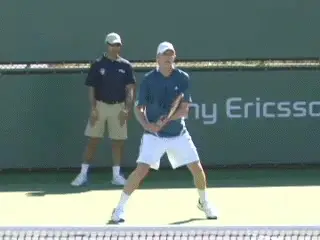
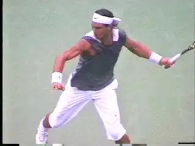
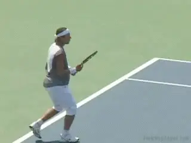

Hardcourt Confidential Excerpt¶
Hardcourt Confidential Excerpt
USTA Player Development
Patrick McEnroe

Being from a tennis family helped prepare me to run player development.
When the job as general manager of the USTA's player development program came open, I felt I was a good candidate. Tennis was in many ways the glue that kept our family close, although my dad might, with some justification, flip that and claim that family was the bonding agent that enabled our success in tennis. Either way, we'd lived a typical tennis family's life, and stood out mostly because of John's extreme talent.
You could substitute the words \"parent management\" for \"player development,\" because the road to success with a promising player, runs through parents especially in more recent times. The stakes have been driven sky high. Today, God forbid you play any other sport by the time you're twelve or thirteen. Perish the thought of going to a \"regular\" school. It's a very different world from the one in which I grew up.
Parents do-and don't-understand this. I take a lot of time trying to explain it to people like the former boxer who's trying to coach his own kid, and who almost had a fistfight with one of our USTA pros at our training facility in Carson, California.
This guy really wanted to toughen up his kid, fitness wise. He got that part more or less right. And he believes that his twelve-year-old should only play against collegiate players because it will lift his game quicker. He thinks he's out there at the cutting edge.
|  |
| Even lone wolf parents like Yuri Sharapov and Peter Graf have used coaches. |
So I was like, \"Great, your kid is a monster, fitness wise. But does he know how to play tennis? Because that still counts. Does he know how to compete? Someday, he's going to have to learn how to beat kids his own age, which is where the pressure really lies.\"
Your classic lone-wolf parent has enjoyed some success, especially in the women's game (think Monica Seles, Steffi Graf, or Maria Sharapova), but I can't think of a single recent case in men's tennis when a kid made it to a high level-and stayed there-with just a parent providing the training. Sergi Bruguera and Jan-Michael Gambill, who were coached by their dads, came the closest. Most important, there's no magic bullet, and no one-size-fits-all plan for producing great players.
The best young player to come along in the U.S. in recent years is work-in-progress Sam Querrey, a kid from California who never went to a tennis academy and played other sports pretty enthusiastically until he got to be seventeen or eighteen, and realized he was particularly gifted at tennis. That kind of thing still happens, and it always will. But it's more and more the exception. And when it does happen, it takes a wise parent to know what to do next.

American Sam Querry: the exception who concentrated late on tennis.
For an American kid, it used to be that you could take a lot of lessons and make it in tennis. But Jose Higueras, my Director of Tennis in the USTA program, has helped me realize how much more physical the game has become. We have a lot of kids in U.S. who know how to hit a ball, but they aren't necessarily great athletes or sufficiently driven. The typical American junior isn't necessarily a rich kid, but he can go out and get lessons and court time, especially if he shows some talent. That's not enough anymore.
We used to focus on teaching kids how to hit nice, clean, efficient shots. It was a one-dimensional approach. Now, we approach a player on various fronts, and when it comes to his technique and stroke production, we act on the premise that we're looking down on a player from directly above. It's a 360-degree game, meaning that today's player needs to know how to move in every direction in response to any given shot.

**Jose has worked with players at the world class level with all styles.**
That's a lot different from focusing exclusively on stepping forward and into the ball, and that's where the battle of development goes after the stroke production is ingrained. It's being fought in areas like biomechanics, fitness, and the decision-making ability under stress-all things that come into play when a player has to spend a lot of time reacting and playing good defense with an eye to making the transition to offense.
Jose was one of the notorious \"clay-court specialists\" of an era awash with them. He was legendary for his work ethic, setting standards that a fleet of Spanish stars would soon emulate. I felt that the New World desperately needed a dose of his Old World work ethic.
Cross-cultural projects easily go awry, but Jose had immigrated to the U.S. near the end of his career, settling near Palm Springs with his American wife. They ran horses-and the occasional tennis player, like Jim. When I got the job as head of player development for the USTA in the spring of 2008, Jose was the first man I wanted to call and the last one I did call after interviewing other candidates and half-a-dozen long talks with Jose himself. He agreed to be my Director of Coaching.

New strings, big swings, massive topspin.
Jose's vision could be called Spanish, although guys like Jimmy Arias and Jim Courier, both out of the Bollettieri Academy, were also pioneers of the aggressive baseline game and violent racket head acceleration. On a broad, institutional level, the Spanish were the first to pick up on that trend, and they were flexible and wise enough to give their budding players intensive training on hard courts.
The technological advances in strings and rackets also enable players to take huge cuts, and the Spanish emphasis on topspin, especially on the forehand side, ensured that the players got sufficient clearance over the net to have a built-in margin of safety no matter how viciously they attacked a ball.
The contemporary player who best represents the ruling style is Rafael Nadal, even though his technique is stylized to the point of seeming radical. You know the guy is no ordinary baseline grinder because of his success on all surfaces, including grass. Granted, Rafa is a rare individual talent. But Jose saw that much of what he did was based on general ideas that could be taught.

**Jose's relationship with Toni Nadal has helped us learn to train juniors**.
Jose has a long-standing friendship with Rafa and his coach, mentor, and uncle, Toni Nadal. He knows Toni's philosophy of the game, and what he did to express it through Rafa. Jose has this one drill he puts kids through that consists of a series of forehands, the last of which calls for the youngster to take a ball that's very low and close to the net. He has to dig the ball out and fire it back over the net, but with enough topspin to make it fall within the court. It's a drill that Rafa did relentlessly, since the time he was about ten.
In our program, we like to develop an ability we call going \"in and out.\" A player needs to know what to do when he's moving in aggressively, or finds himself getting pushed back, or out. It applies to moving and hitting side-to-side as well. The idea is that you play tennis in a circle, and you need to develop sound technique for this 360-degree job.
Today's players have to know how to turn the tables and seize the initiative from all points on the court. Net clearance is a big issue for Jose: the farther back you are on the court, the more height you want on the ball crossing the net. The closer you are to the net, the less clearance you want.

In the modern game, players learn to be aggressive moving in all directions.
We also emphasize decision making under duress. When you're playing in a circle, you need to decide if you're on defense or offense, if you ought to play high or low over the net, if you're better off volleying short, or punching the ball deep. Hit the volley deep and there's a chance the other guy will be able to make his passing shot dip low over the net, forcing you to hit a defensive volley. But if you play the volley short, your opponent has to come up with the ball but still hit it with enough pace and spin to pass you and drop it into your court.
Back in the day, the idea of actually teaching someone how to hit an aggressive shot while backing up would have been considered heresy--if the very idea could even have been conceived. But this is the era of heresy; teaching American kids the Spanish way to play, but with a greater emphasis on finishing points, is just part of it. And while things in the near term look a little shaky for our mature juniors, we're very encouraged by the performance of the kids in our sixteen and fourteen-and-under age divisions.
|  | winning numerous pro doubles titles with multiple |
| partners. He has been a long time commentator on | |
| Photo: ESPN Photography | ESPN covering the world tour. As American Davis |
| Cup captain, he molded young players including | |
| Andy Roddick, James Blake, and the Bryan Brothers | |
| into a team brought the cup home in 2007. In his | |
| latest undertaking as head of USTA Player | |
| Development, he is remaking the way young | |
| American players are trained following the model | |
| of countries like Spain. And, oh yeah, he also | |
| has brother who was a pretty good player in his | |
| own right. |